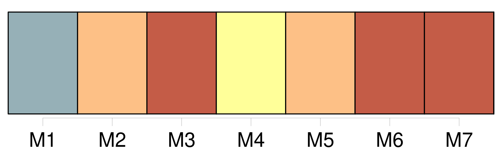
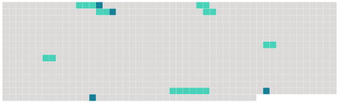

Longueur nb maillons : 11 mentions |
 |
Par la mort civile, le condamné perd la propriété de [tous les biens] [qu'] il possédait ; sa succession est ouverte au profit de ses héritiers, auxquels [ses biens] sont dévolus, de la même manière que s'il était mort naturellement et sans testament.
Il ne peut plus ni recueillir aucune succession, ni transmettre, à ce titre, [les biens] [qu'] il a acquis par la suite.
Il ne peut ni disposer de [ses biens] , en tout ou en partie, soit par donation entre-vifs, soit par testament, ni recevoir à ce titre, si ce n'est pour cause d'alimens. [12 phrases]
[Leurs biens] seront administrés et leurs droits exercés de même que ceux des absens. [1 phrases]
Lorsque le condamné par contumace se présentera volontairement dans les cinq années, à compter du jour de l'exécution, ou lorsqu'il aura été saisi et constitué prisonnier dans ce délai, le jugement sera anéanti de plein droit ; l'accusé sera remis en possession de [ses biens] il sera jugé de nouveau ; et si, par ce nouveau jugement, il est condamné à la même peine ou à une peine différente emportant également la mort civile, elle n'aura lieu qu'à compter du jour de l'exécution du second jugement. [8 phrases]
[Les biens acquis par le condamné] , depuis la mort civile encourue, et [dont] il se trouvera en possession au jour de sa mort naturelle appartiendront à la nation par droit de déshérence. Néanmoins le Gouvernement [en] pourra faire, au profit de la veuve, des enfans ou parens du condamné, telles dispositions que l'humanité lui suggérera. |
 |
Il est possible de télécharger la ressource sur la page Ortolang |
Si vous avez des questions ou vous voyez des erreurs, merci d'envoyer un mail à silvia.federzoni89@gmail.com |